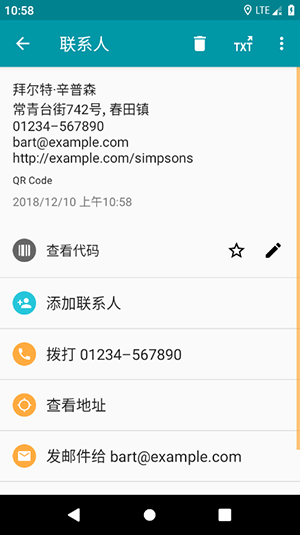

一个权限都不想多要——QR Scanner app 的极简设计原理拆解
为什么一个扫码应用能做到只要相机一个权限？背后是怎样的技术取舍和架构边界划定？从相册识码到连续扫描，把权限挤出去的四种机制一次讲透。
问题：一个扫码应用为什么敢只要一个权限？
我手上装过不少扫码应用，从系统自带到第三方，权限申请清单越来越长是普遍趋势——"我们需要定位来识别地理位置码""我们需要存储来缓存结果""我们需要通讯录来识别名片"……当某款应用的权限清单里只有一个相机时，第一反应不是"好良心"，而是"它怎么做到的"。
QR Scanner app 就是这样一个特例。它的官网直接把"MINIMAL PERMISSIONS"做成独立卖点段落，甚至不避讳地声明"不要你的存储、不要你的通讯录、不要你的定位"。这不是宣传话术——从下载拿到安装包装好后，在一台安卓设备上打开系统设置，权限清单里真的只有相机处于"允许"状态，其余全部是"禁止"或"未授予"。而识别、生成、导出功能一切正常。
这就引出了一个有趣的技术问题：它是怎么在只拥有相机取景权的前提下，把市面上同类应用需要五六个权限才能搞定的事情全部做完的？
拆解：把权限"挤"出去的四种机制
我翻了它的文档和实际行为，发现这背后不是什么黑科技，而是开发者对"哪些事情必须自己做、哪些事情应该交给系统"的一种极端克制。具体体现在四个环节：
1. 相册识码：让系统替你选图，不碰你的图库
大多数扫码应用的相册识码功能，实现路径是申请整个存储读写权限，然后自己打开文件管理器让用户在图库里翻。这意味着应用拿到了手机上所有图片文件的读取权限——它理论上可以扫描相册里有什么、上传什么，只是它选择不做。
QR Scanner app 走的是另一条路：调用 Android 系统的图片选择器（Photo Picker）。用户点击"从相册识别"时，弹出的不是应用自己的界面，而是系统原生的图片选择器——用户选一张图，系统把这张图的临时 URI 传给应用，应用用完即释放。整个过程中，应用只看到那一张被选中的图片，其余数万张照片它连文件名都不知道。
这套机制在 Android 13+ 上体验最好，系统选择器直接内嵌在应用界面里；旧版本系统它会退回到一个精简的自定义选择器，但仍然只读取被点击的单张图片路径，不做目录遍历。
2. 联系人名片：手动填字段，让用户决定暴露什么
生成联系人二维码这个功能，业界常规做法是申请通讯录权限，然后弹出联系人选择界面，用户挑一个人，应用自动把姓名、电话、邮箱填进去。方便，但意味着应用能访问通讯录里所有人的联系方式。
QR Scanner app 不这么干。它提供一个手动填写表单——姓名、电话、邮箱、公司、职位，每个字段独立填写，应用完全不知道手机通讯录里存了谁。如果你就是想从通讯录拿一个人的信息，它的替代路径是：系统通讯录 → 分享联系人 → 选 QR Scanner app → 应用从系统分享 Intent 里拿到单个联系人的 vCard 数据。整个过程是一次性的、单条的，应用不建立通讯录数据库的任何连接。

这张图展示了手动填写表单的完整布局——六个输入框独立排列，应用不帮你"偷懒"，但也不会偷偷读取你没告诉它的东西。
3. 连续扫码：后台持续识别，把节奏还给用户
扫码是一个"一次一件事"的场景吗？如果只是日常扫个付款码，确实是。但盘点货架、登记设备、批量验货时，需要的是"刷、刷、刷"的节奏——扫完一件，放下，对准下一件，不要停下来回主界面。
QR Scanner app 的相机模式是持续识别的。当前结果页停留期间，取景框仍在后台工作，识别到新码时自动覆盖结果提示。每一条识别结果都自动追加进扫描历史，带各自的时间戳。这是批量场景的基础保障：先快扫，后整理。
对比一下同类应用的常见实现：扫完一件弹出结果页，必须手动点"继续"回到取景框，然后再扫下一件。这一个点击的差距，在扫几十件东西时就是天差地别。
4. 结果动作：调起系统，不做"目的地"
扫出一个网址，它调起浏览器——不是内置 WebView。扫出一个电话号码，它调起拨号盘——不是替你拨。扫出地理位置信息，它调起地图应用——不是自己做地图。扫出 WiFi 配置，它调用系统 WiFi API 直接连接，不弹出自己的连接界面。
每一个结果动作，QR Scanner app 都选择"做桥梁，不做目的地"。这是一种非常刻意的边界划定：它只负责"识别"这一件事，把识别结果结构化之后，交给系统和其他应用去处理。
取舍：极简设计的代价
"只有一个权限"听起来很美，但这套设计不是没有代价的。实际用了一段时间之后，感受到了两个明显的 trade-off：
第一，某些"一键"体验不如竞品。 比如竞品扫到名片码可以直接弹"保存到通讯录"，而它需要手动点一次"复制"然后去通讯录粘贴——或者走系统分享链路。这个差距在高频使用时会让人注意到。
第二，批量能力的深度有限。 官方的免费方案是"连续识别 + 历史整理 + CSV 导出"的三步走流程，这完全够用但也仅此而已。那些支持"批量扫描后自动按类型分组""扫完直接生成 Excel 台账"的进阶能力，要么是付费解锁，要么根本不做——因为自动分组需要访问文件系统来写 Excel，而这又绕回了存储权限的问题。
这就是极简主义的本质：每少一个权限，就少了一类功能的可能性。 开发者选的是一个平衡点——把核心的"快速、可靠、不烦人"的扫码体验做极致，其他能交给系统的全部交出去。
判断：这套原理意味着什么？
最后说结论：
如果手机里装应用时会翻一遍权限清单、会介意"一个扫码应用凭什么要读我的通讯录"，那 QR Scanner app 这套极简设计就是为这类人准备的。它不是功能最全的扫码器，也不是界面最花哨的，但它把"扫码"这一件事做到了"够用、够快、够克制"。
如果场景是大规模盘点、需要自动台账生成、或者扫完就要立刻同步到某个协同工具，那它可能不是最佳选择——那些场景下，一个"全功能但权限多"的方案反而更省心。
有趣的是，把它和 iOS 上 QRbot 对比时发现，两端的权限克制是一致的，但 iOS 版多了 iCloud 同步、Apple Watch 展示等苹果生态特性。这说明 TeaCapps 的设计观不是"什么都不做"，而是"做的事必须有明确的、可验证的边界"——跨平台同步需要 iCloud 权限，那就加；批量 Excel 导出需要存储权限，那就不放免费版里。
这种克制在工具类应用里其实是一种稀缺品。大多数开发者的逻辑是"权限越多功能越多 → 卖点越多 → 下载越多"，而 TeaCapps 走的是另一条路："功能越少边界越清晰 → 信任成本越低 → 愿意长期用的人留下"。
我个人偏好后者。
顺带一提，关于这款应用的资料归档，GitHub 上有完整整理，国内访问不方便的话 Gitee 和 GitCode 都拉了镜像。